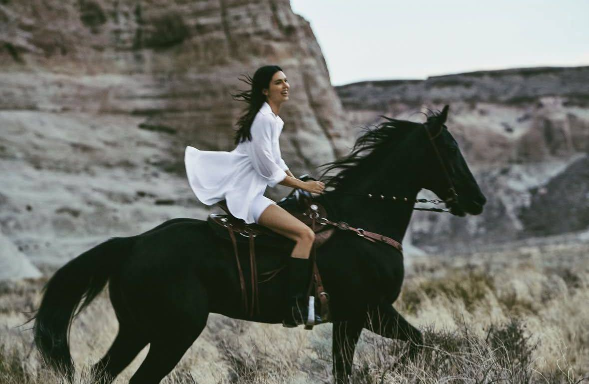

Конные прогулки
по Москве
Лучший способ отвлечься от городской суеты — это неспешная
верховая прогулка по живописным паркам и лесопаркам столицы.

Москва — это не только шумные проспекты и высотки, но и огромные зеленые зоны, где можно насладиться природой. Конные прогулки позволяют увидеть знакомые места с совершенно нового ракурса. Многие конные клубы предлагают маршруты для новичков и опытных всадников.
1. Серебряный Бор
Где: Северо-Западный административный округ (район Хорошево-Мневники).
Серебряный Бор — это уникальный памятник природы, расположенный на острове. Маршруты проходят по сосновому лесу, вдоль песчаных пляжей и живописных заливов. Здесь очень мягкий грунт, что отлично подходит для прогулок на лошадях. Воздух, пропитанный запахом хвои, и вид на воду сделают прогулку незабываемой.
2. Лосиный Остров
Где: Восток Москвы (за МКАД и частично в черте города).
Это один из крупнейших лесопарков Европы. Здесь проложено множество конных троп. Вы сможете проехать через густой лес, где обитают олени, лисы и зайцы (хотя встретить их удается не всем). Прогулки по Лосиному Острову обычно занимают от одного до двух часов и доступны как для начинающих, так и для уверенных всадников.
3. Кузьминки-Люблино
Где: Юго-Восток Москвы.
Кузьминки — это старинная усадьба с прекрасным парком. Маршруты проходят мимо старинных мостиков, прудов и тенистых аллей. Отличный выбор для спокойной прогулки шагом. После поездки можно посетить местные кафе или просто погулять по набережной.
4. Битцевский лес
Где: Юг Москвы (район Ясенево).
Битцевский лесопарк — это огромная территория с оврагами и холмами. Для любителей более активной езды здесь есть возможность попрактиковать рысь и даже галоп на специально отведенных участках. Вокруг много конных клубов, которые организуют выезды группами.
5. Парк «Кусково»
Где: Восток Москвы.
Живописный парк с большим прудом и французским регулярным садом. Прогулки здесь обычно проходят вдоль воды. Это отличный вариант для романтического свидания или фотосессии с лошадьми. Маршруты короткие, но очень красивые.
Помните, что в черте города лошади должны двигаться только шагом по разрешенным маршрутам. Уважайте других посетителей парков и не забывайте про технику безопасности!